Protein synthesis and primary structure
Transcription is the process of producing an RNA molecule using DNA as a template.
Write the definition, then any 4 or 5 of these points, one line each: Protein Synthesis: From Code to Protein; Two major processes:; Transcription: DNA → mRNA; What is mRNA?; Pre-mRNA Formation; Pre-mRNA Processing.
- Protein Synthesis: From Code to Protein
- Two major processes:
- Transcription: DNA → mRNA
- What is mRNA?
- Pre-mRNA Formation
- Pre-mRNA Processing
- RNA Splicing: Introns and Exons
- Mature mRNA
- Translation: mRNA → Protein
- Ribosome Structure and Function
- Ribosomal A, P and E Sites
- Codons: Reading the Genetic Code
- Role of tRNA
- Translation Process : Initiation
Finish with a labelled diagram or table, one real example, one application and a one-line conclusion.
- 2 marks: Define transcription.
- 5 marks: Explain pre-mRNA processing.
- 12 marks: Describe protein synthesis (transcription and translation) and primary structure.
Complete notes
Protein Synthesis: From Code to Protein
How does a cell convert genetic information into a functional protein?
Central idea:
DNA → RNA → Protein
- DNA stores the instructions.
- RNA carries the required information.
- Ribosomes read the information.
- Amino acids are assembled into a protein.
- The amino acid sequence determines the protein's primary structure.
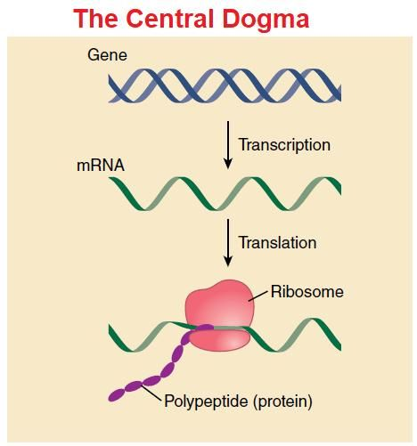
Two major processes:
- Transcription:
DNA → RNA - Translation:
RNA → Protein - This provides a simple framework for understanding how information stored in DNA ultimately produces a functional protein.
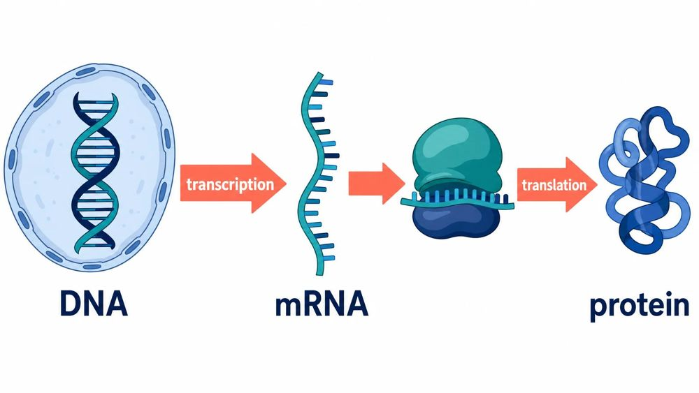
Transcription: DNA → mRNA
- Transcription is the process of producing an RNA molecule using DNA as a template.
- The enzyme RNA polymerase plays a central role.
Basic process:
- DNA gene → RNA polymerase → mRNA
- The resulting messenger RNA (mRNA) carries the genetic information needed for protein synthesis.
- In eukaryotes, transcription occurs in the nucleus.
Why mRNA?
- DNA is the stable storage molecule, while mRNA acts as a temporary working copy of the required information.
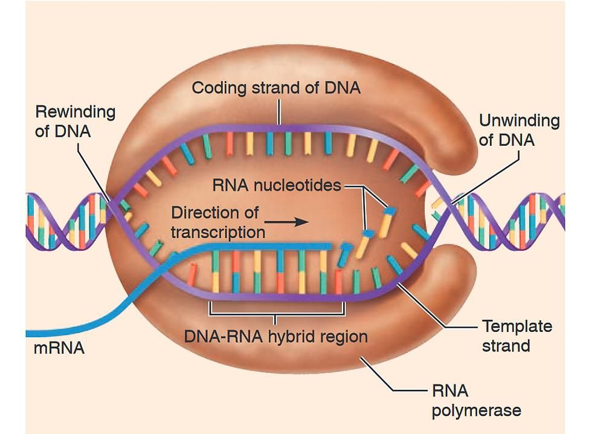
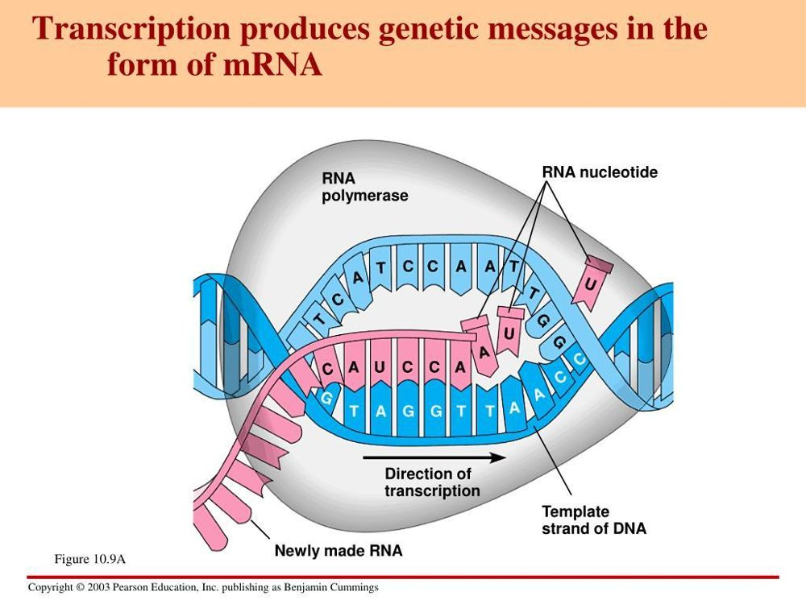
What is mRNA?
- mRNA = messenger RNA
- It carries genetic information from DNA to the ribosome.
- RNA contains four bases:
- A – Adenine
U – Uracil
G – Guanine
C – Cytosine - DNA → T (Thymine) instead of RNA → U (Uracil)
- The sequence of bases in mRNA determines the order in which amino acids will be incorporated into the protein.
- The initial transcript from a protein-coding gene is pre-mRNA.
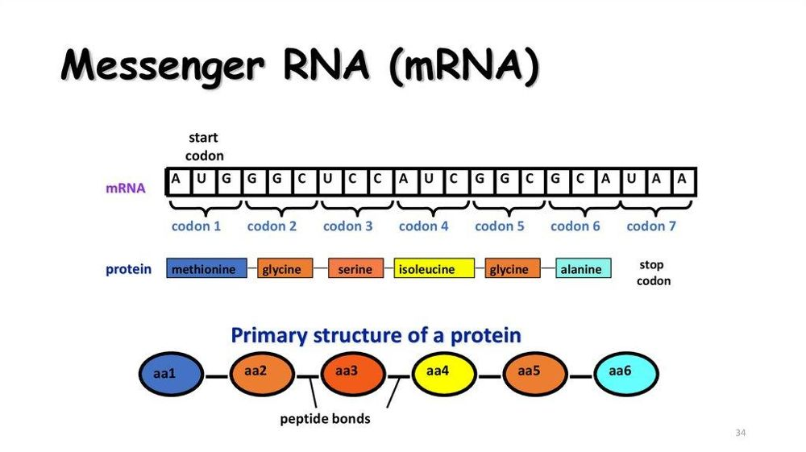
Pre-mRNA Formation
- Pre-mRNA is the primary RNA transcript produced from a protein-coding gene.
- It contains sequences that will be retained and sequences that will be removed during processing.
- Pre-mRNA undergoes processing before becoming mature mRNA.
- Major processing events are 5′ capping, splicing, and polyadenylation.
Pre-mRNA Processing
- 5′ capping adds a modified guanine nucleotide to the 5′ end.
- Splicing removes introns and joins exons.
- Polyadenylation adds a poly-A tail to the 3′ end.
- Processing produces mature mRNA suitable for export to the cytoplasm and translation
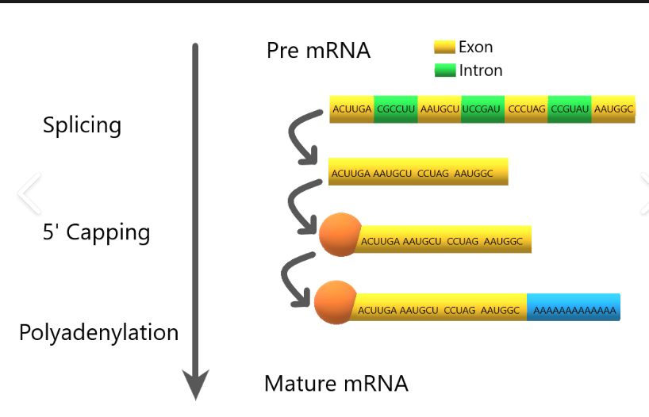
RNA Splicing: Introns and Exons
- Introns are intervening sequences removed from pre-mRNA.
- Exons are sequences retained in mature RNA.
- The spliceosome protein carries out the major steps of pre-mRNA splicing.
- Exons are joined to form the mature mRNA sequence.
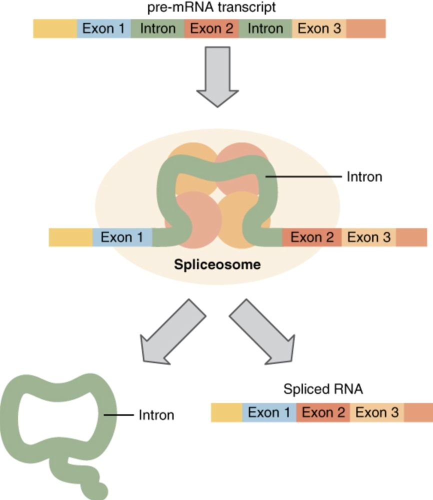
Mature mRNA
- Mature mRNA contains a 5′ cap, joined exons, and a 3′ poly-A tail.
- It is transported from the nucleus to the cytoplasm in eukaryotic cells.
- Mature mRNA provides the template for protein synthesis at the ribosome.
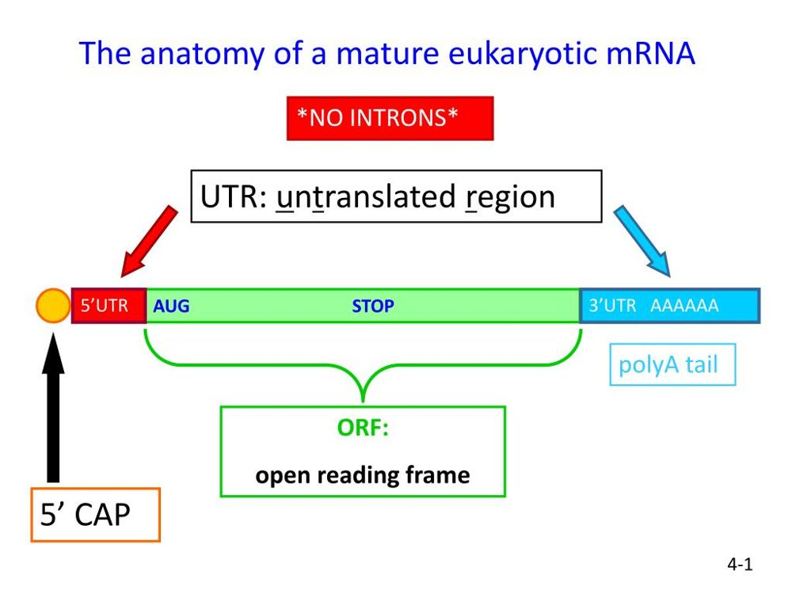
Translation: mRNA → Protein
- Translation is the process by which the information in mRNA is converted into an amino acid sequence.
- Translation occurs at the ribosome.
- The ribosome: binds to mRNA.
- Reads the mRNA sequence.
- Identifies codons.
- Brings together the appropriate amino acids.
- Links the amino acids using peptide bonds.
- Produces a polypeptide chain.
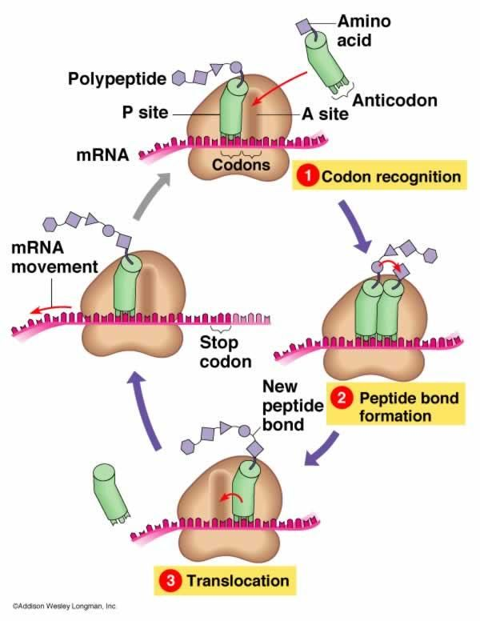
Ribosome Structure and Function
- Ribosomes are molecular machines responsible for translation.
- They consist of a small and a large subunit.
- The small subunit participates in mRNA recognition and decoding.
- The large subunit contains the catalytic center involved in peptide bond formation.
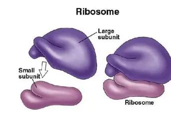
Ribosomal A, P and E Sites
- A site: accepts incoming aminoacyl-tRNA.
- P site: holds the tRNA carrying the growing polypeptide.
- E site: accommodates the exiting deacylated tRNA.
- These sites coordinate sequential addition of amino acids
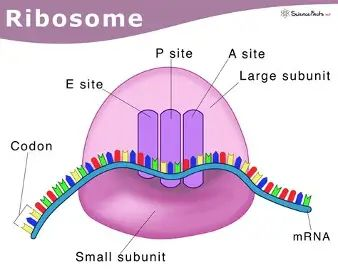
Codons: Reading the Genetic Code
- The ribosome reads mRNA in groups of three nucleotides.
- Each group of three is called a codon.
- Example:
- AUG – GCU – AAA – UGC
- Each codon specifies an amino acid or provides a start/stop signal.
- Because there are four possible RNA bases:
- 4 × 4 × 4 = 64 possible codons
- These codons specify the 20 standard amino acids, along with start and stop signals.
- Think of codons as three-character instructions in a biological programming language.
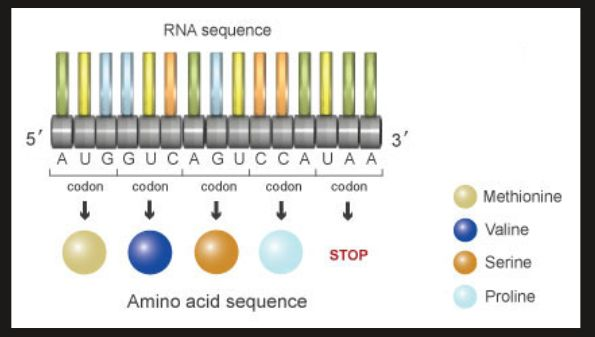
Figure
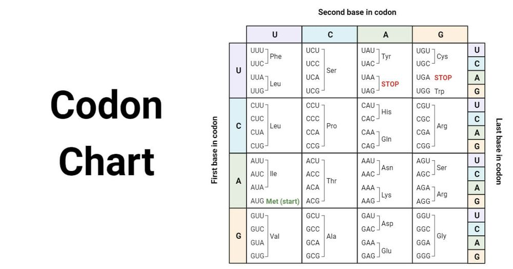
Role of tRNA
- tRNA = transfer RNA
- tRNA helps bring the correct amino acid to the ribosome during translation.
- Each tRNA contains:
- An anticodon
- A corresponding amino acid
- Example:
mRNA codon: AUG
↑
complementary
↓
tRNA anticodon: UAC
- The tRNA ensures that the appropriate amino acid is incorporated into the growing protein chain.
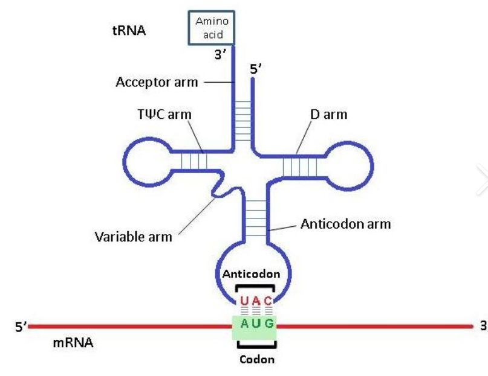
Translation Process : Initiation
- Translation begins when the ribosome assembles on mRNA.
- The start codon, usually AUG, establishes the reading frame.
- The initiator tRNA carrying methionine pairs with the start codon.
- The complete ribosome is assembled and ready for elongation.
Translation: Elongation
- An aminoacyl-tRNA enters the A site and pairs with the corresponding codon.
- A peptide bond is formed between amino acids.
- The ribosome moves along mRNA in the 5′ to 3′ direction.
- tRNAs move through the A, P and E sites as the polypeptide grows.
Translation: Termination
- Translation terminates when a stop codon enters the ribosome.
- Stop codons do not encode amino acids.
- Release factors promote release of the completed polypeptide.
- Ribosomal subunits and mRNA can subsequently dissociate.
Figure
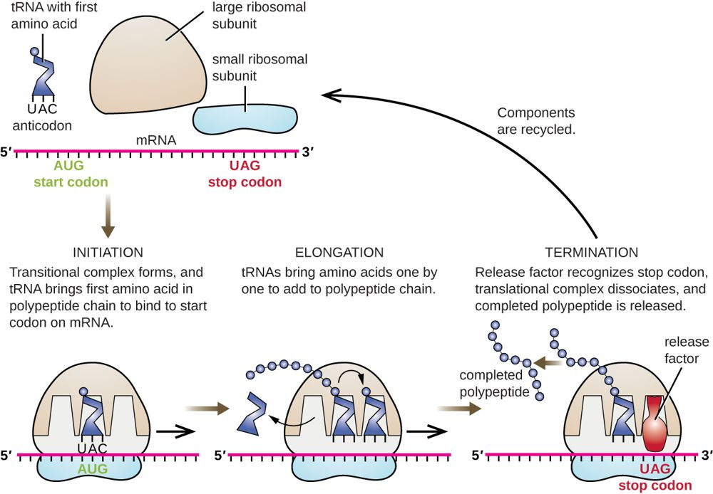
Formation of the Polypeptide Chain
- The amino acids brought to the ribosome are joined together by peptide bonds.
Amino acid
+
Amino acid
+
Amino acid
↓
Polypeptide chain
- The chain grows as the ribosome continues reading the mRNA.
Eventually, a stop codon signals the end of translation.
- The newly synthesized polypeptide then folds and may undergo further modifications to become a functional protein.
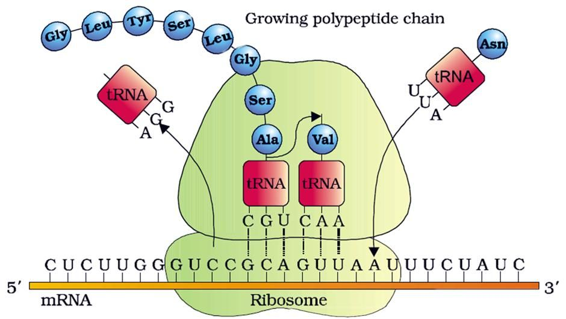
What is Primary Structure?
- The primary structure of a protein is the specific linear sequence of amino acids in its polypeptide chain.
For example:
Met – Ala – Gly – Lys – Leu – Ser – Val
- The amino acids are connected by peptide bonds.
- The sequence is directional: N-terminus → C-terminus
Why is it important?
- The amino acid sequence provides the foundation for the protein's higher-order structure and ultimately influences its function.
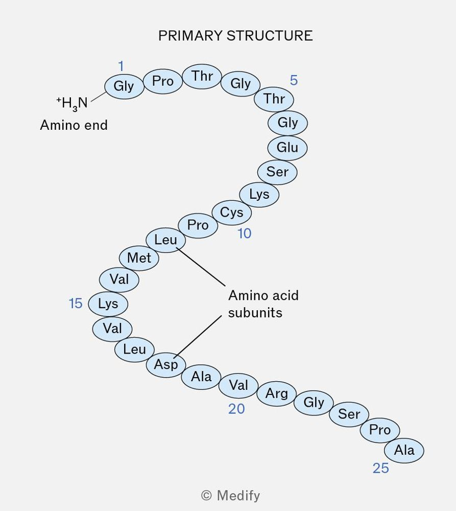
What are Proteins?
- Proteins are complex biological molecules made up of smaller units called amino acids.
- They perform a wide range of functions:
- Enzymes – catalyze biochemical reactions
- Structural proteins – provide support
- Transport proteins – carry molecules
- Receptors – receive signals
- Antibodies – participate in defense
- Regulatory proteins – control cellular processes
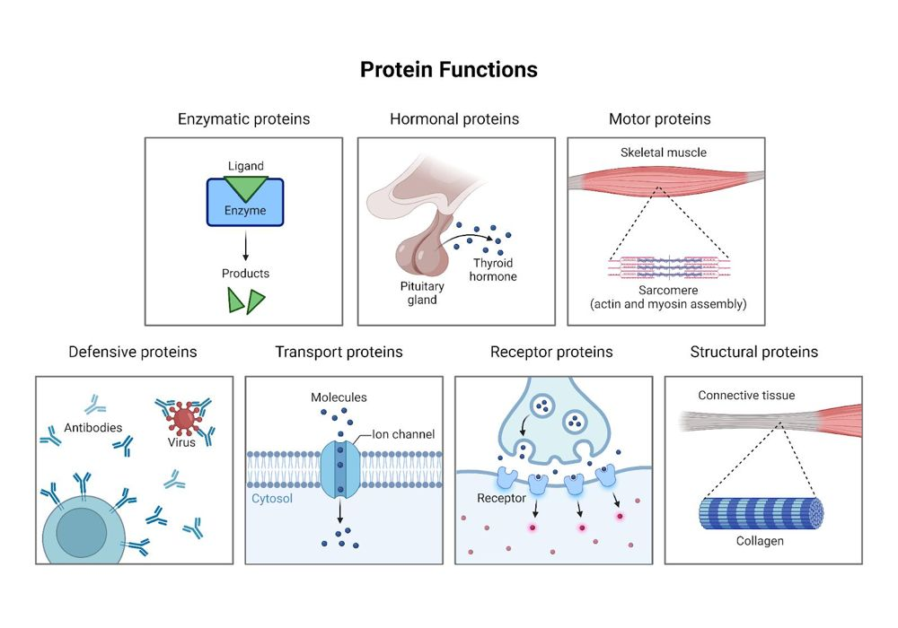
Figure
- Proteins are constructed from 20 standard amino acids.
- Each amino acid contains:
- Amino group (–NH₂)
- Carboxyl group (–COOH)
- Hydrogen atom
- Variable R group
- Central carbon atom
- The R group differs among amino acids and gives each amino acid its unique chemical properties.
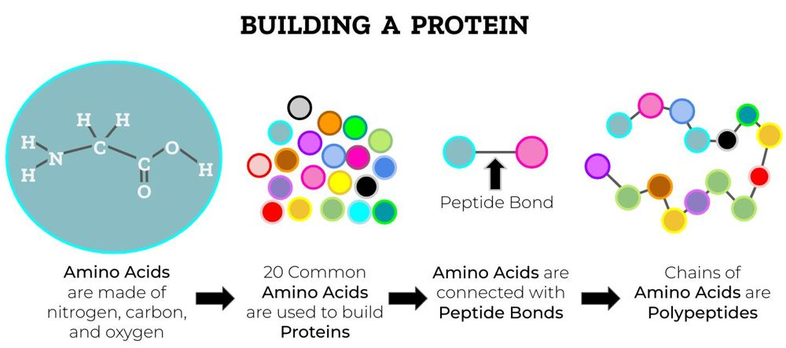
Figure
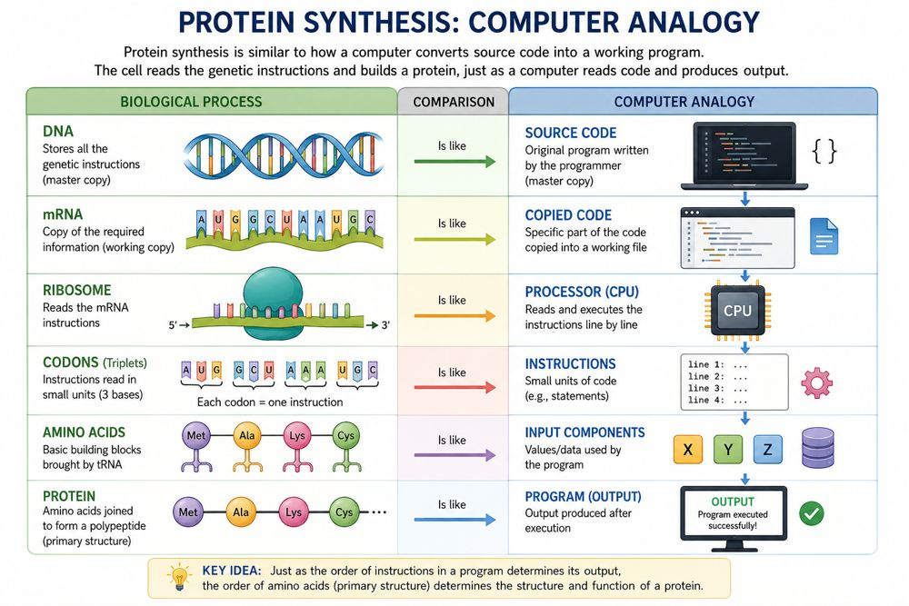
More notes
2.4 PROTEIN SYNTHESIS ~ q
Protein synthesis is the process in which cells build proteins. Both prokaryotic cell and eukaryotic cell synthesize different types of proteins. It’s a multi-step process involving transcription, posttranscriptional modification, translation, and per tin, Modifications to yield the desired protein. Before understanding the i i ; , aeDNAlabd RNA te aehdh sluts of protein synthesis, a brief knowledge | DNA (Deoxyribose Nucleic Acid): DNA is a nucleic acid that contains iho soca ena used in the development and functioning of all known living organisms. The main role of DNA molecules is the long-term storage ofgenetic information, | rrr Frederick Griffith in 1928 showed that the DNA was the cell’s genetic material. Rosalind Franklin took diffraction X-ray photographs of DNA crystals. Watson and Crick in the 1950's built the first model of DNA. Structure of DNA: In 1953, Watson and Crick proposed a model to explain the arrangement of molecules in DNA. The model is characterized by the following features:
+ DNA is formed of two polynucleotide chains, spirally coiled to form a double helix. ETT
- Each chain is formed of many units called nucleotides- building blocks of DNA. agers « A nucleotide is formed of three components, namely a phosphoric acid, a deoxyribose sugar and a nitrogenous base. The bases are Adenine (A), Guanine (G), Cytosine (C) and Thymine (T). “A STEERS
- Deoxyribose sugar and nitrogenous base comprise to form a Nucleoside, with addition of a phosphoric acid is called as Nucleotide. —
- Adenine and guanine belong to a group of compounds called Purines, Thymine and cytosine belong to another group called as Pyrimidines. Purines are linked or bonded with pyrimidines.
- In a DNA molecule, adenine always pairs with thymine with two hydrogen bonds while guanine pairs with cytosine with three hydrogen | bonds, the latter being more stronger interaction. The amount of adenifie is equal to the amount of thymine and the amount of guanine 1s equal to the amount of cytosine. This is called as Chargaff’s Rule.
- The two chains of a DNA are complementary to each other. Oneend of the chain is called 3’ end and the other end is called 5’ end. The strands are antiparallel in nature. i
- The two complementary chains are twisted around each other to form a double helix. One turn of the helix is about 34A and contains ten paired nucleotides with a distance of 3.4A between each pair of bases. The width of the DNA molecule is 20A.
DNA Replication: DNA replication is a biological process that OCCurs in all living organisms and copies their DNA; it is the basis for biologica inheritance. The process starts with one double-stranded DNA molecule ang produces two identical copies of the molecule. There are number differences between the mode of prokaryotic and eukaryotic DNA replications. In a cel), DNA replication generally begins at specific locations in.the genome, calleq Steps involved:
- Unwinding of DNA at the origin. + Break of hydrogen bonds by unzipping of the, strands by various enzymes and proteins. Th
- Addition of bases and synthesis of new strand from the template strand F by DNApolymerase. seihaie H Ribonucleic acid (RNA): RNA is a nucleic acid containing ribose sugar, at It is found in large amounts in the cytoplasm and fewer amounts in the nucleus. RNA is single stranded, sometimes may be folded back upon itself to-form double stranded coiled form. The purines and pyrimidines amount are not equal, and thymine is replaced by another base called uracil (U), \ Three types of RNA are present:
“ (a) Messenger RNA (mRNA) constitutes 3-5% of total RNA content. (b) Transfer RNA (tRNA) constitutes 15-17% of total RNA content. (c), Ribosomal RNA (rRNA) constitutes 80% of total RNA content. (a) Messenger RNA (mRNA) Messenger RNA is a ribonucleic acid which carries the genetic information for “protein synthesis from DNA to the cytoplasm. The mRNA constitutes of 3-5% of the total cellular RNA. The mRNA is synthesised as a complementary strand upon the chromosomal or genomic DNA. The mRNA carries the message in the form of triplet codes. It carries the information for a specific protein and is made up of several hundreds to few thousands nucleotides One end of mRNA is called the 5’end and the other is the 3’end. At the 5’end, acap region is present which helps the mRNA to bind to with ribosomes adenylate (A) nucleotides. These are called post-transcriptional modifications which can also provide stability to the mRNA. AUG generally represents translation initiation codon (methionine) and UAA represents translation termination codon in the mRNA.
} - The Molecular and Biochemical Basis ofan Organism 55 1) AUG UAA é f | Coding region | oes Poly (A tail Non-Coding region Non-Coding region sae AUG UAA Poly(A) tail . | Non coding Region = ;
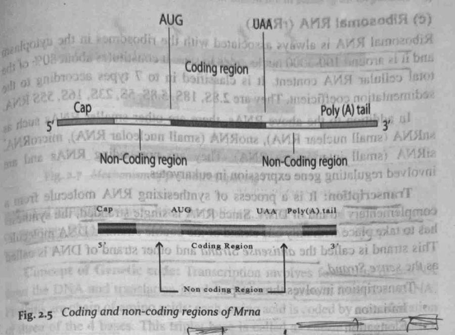
Transfer RNA is a type of RNA which transports amino acids to the site of protein synthesis. It is single stranded and constitutes about 15-17% of the total cellular RNA. Each tRNA can transport only one amino acid. There are 60 types of tRNA. As there are 20 different amino acids, certain amino acids are carried by more than one tRNA.
Itcontains of 75-80 nucleotides.
The tRNA assigns a clover leaf atest | like structure (Fig. 2.6). It contains four arms namely: Tarm (a) Acceptor arm or amino acid- Vests binding site (b) D arm or enzyme site Anticodon arm (c) Ty*C arm or Ribosome site anederkig (d) — Anticodon arm Or_ Fig. 2.6 Schematic representation of a Recognition site tRNA :
The anticodon loop contains codon complementary to the mRNA sequence. The respective anticodon | Makes the respective amino acid to bind at the acceptor arm. The D and T arm Possess unusual bases like pseudouridine and dihydrouridine.
(c) Ribosomal RNA (rRNA) \ Ribosomal RNA is always associated with the ribosomes in the cytoplasm and it is around 100-3000 nucleotides in size. It constitutes about 80% of the totaf cellular RNA content. It is classified in to 7 types according to the In addition to the above RNAs, there are other smaller RNAs such as snRNA (small nuclear RNA), snoRNA (small nucleolar RNA), microRNA, siRNA (small interference RNA). They are non-coding RNAs and are involved regulating gene expression in eukaryotes. Transcription: It is a process of synthesizing RNA molecule from a complementary strand of DNA. Since RNA is single stranded, the synthesis has to take place with only one strand of the double stranded DNA molecule, i This strand is called the antisense Strand and other strand of DNA is called j as the sense Strand, % Transcription involves three steps:
+ Elongatior gation ’ ' Initiation: The RNA polymerase binds to the double stranded DNA by recognizing _a_sequence on it for attachment; this is called as promoter Sega TATA Box After ihe binding of RNA polymerase, the DNA mofeetle unzips liself by 20 base pairs. The region which has to be transcribed following the promoter sequence is called_as_downstream_region and sequence before the promoter is called as upst -sequence.-The site (nucleotide) where transcription starts is led ee site and it is denoted as +1. 5 Elongation: As the unwinding of DNA takes place the RNA polymerase adds complementary bases and synthesizes RNA in the 5’ —» 3° direction. It continues until a gene is completely transcribed. =——— Termination: When the RNA polymerase ‘reaches a stop signal in the DNA sequence, the RNA polymerase stops its work and unbinds itself from the DNA and THRNA falls off from the complex ‘Teading to the stop in transcription. After the_synthesis of RNA from DNA by.transeription, the resultant RNA is called as precursor mRNA (pre-mRNA). This contains both coding sequences (exons) and: non-coding sequénces (introns). Thus, the introns have to be removed or spliced from the pre-mRNA (Fig. 2.7). Splicing is a mechanism of removing of introns and joining of exons that occurs in spliceosome. A spliceosome contains a complex of small nuclear
A, Parise zaman
- | Tat Sree eel f Fig. 2-7 Mechanism of pre-mRNA splicing s } RNA and protein subunits. After the splicing, the RNA is said to be processed i or mere BNA and it leaves the nucleus and enters the cytoplasm for | Concept of Genetic code: Transcription involves formation of mRNA from the DNA and translation involves formation protein from the mRNA. i Proteins are chain of amino acids; each amino acid is coded by a combination of three of the 4 bases. This triplet base is called as codon-(genetic code). | There are 4 bases so total of 4 x 4 x 4= 64 codons. Totally only twenty amino i | ‘ cers meee eee f acids are present but there are 64 codons and obviously, there are extra . codons. Fi =e Properties of genetic code:
- Genetic code is universal among living organisms.
- Each amino acid is coded by more than one codon.- Redundancy
- No codon codes for more than one amino acid. — Ambiguous Four codons among the 64 codons have the function to determine the start and end of the franslation process (Table 2.1). Tu ad Table 2.1 List of codons coding for the respective amino acids. ; First | Second Base Third ey uuu | ucu UAU UGU ie per Phenylalanine | Serine ‘Tyrosine __| Cysteine eee UUC UCC UAC UGC asa Phenylalanine Serine Tyrosine Cysteine peeeeey UUA | UCA | UAA S20 | UGA ie aes Py) Leucine Serine Seip eta iE: op. aie eae] UUG UCG UAG =| UGG 3 Leucine Serine Stop —_| Tryptophan }
Oe ae
Leucine Proline Histidine Arginine Leucine Proline Histidine Arginine
Cua cca caa cga
Leucine Proline Glutamine Arginine | CUG CCG CAG cGG | Leucine Proline Glutamine Arginine | Isoleucine Threonine Asparagine Serine
Auc acc aac agc
f Isoleucine Threonine Asparagine Serine
Aua aca aaa aga
Tsoleucine Threonine Lysine Arginine Methionine ‘| Threonine Lysine Arginine jet a GUU GCU GAU GGU Seay Valine Alanine Aspartate Glycine sey GUC GCC GAC GGC Valine Alanine Aspartate Glycine
Gua gca
Valine Alanine | Glutamate Glycine es GUG GCG GAG GGG Sie Valine Alanine | Glutamate Glycine a) Start codon: AUG _ b) Stop codons: UAG, UGA, UAA Translation involves the transfer of the genetic code in an mRNA molecule into the amino acid sequence of a polypeptide (Fig. 2.8). It occurs in the cytoplasm. This involves four components: — ribosomes (with large and small subunits) — amino acids.
Translation mechanism comprises of three steps involving (a) Initiation, (b) Elongation, and (c) Termination. fa eee Sts nas:
(A) Initiation of Translation : The_mRNA binds to the smaller unit of the ribosome (30S). The attachment is made at the first codon of mRNA which is AUG coding c Sa eee”
Initiation step
charged tRNA Rac ELONGATION STEP empty tRNA q L i es i aa 8 Translocation (movement of the ribosome Any > x relative to the mRNA) allows the cycle of fs Ge BAY protein synthesis to continue.As the complex pais ey re reach the stop codon the Protein synthesis stops e ee ae aE
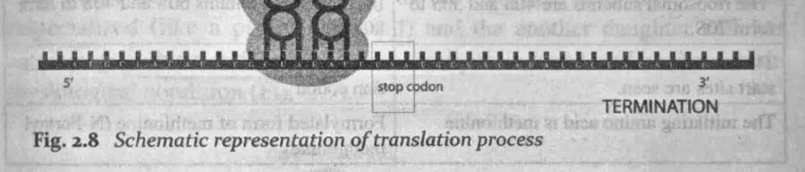
+ ThetRNA having the anticodon UAC complementary to AUG in mRNA attaches itself to the initiation codon and transports methionine to the 30S subunit. This complex of mRNA, tRNA and 30S is called preinitiation complex. Later, 50S subunit joins to forms the complex, Initiation Complex.
- The complex has two slots for the entry of tRNA. They are P site (peptidyl site) and A site (aminoacy] site). The first tRNA attaches to the P site.
(B) Elongation and (C) Termination _* Itrefers to the addition of amino acids one by one to the first aming acid | nethionine, as per the sequence of the codons in mRNA.
- The second codon in the mRNA is recognized and the corresponding tRNA enters the A site and the respective amino acid is brought along with it,’ The tRNA with respective amino acid is called as chargeq
- The formation of peptide bond occurs. between the first amino acid and the second amino acid... - i
- As the complex moves and reads the next codon in the mRNA the first tRNA leaves the complex through the P site and falls off, followed the second tRNA occupying the P site and entry of new tRNA at the A site and corresponding amino acid is added to the chain and peptide bond is
- This process continues as the stop codon UAA/UGA/UAG is reached, then the chain terminates and the process stops leaving behind the synthesized protein. The protein formed is a sequence of amino acids linked by peptide bond. This is called as termination.
+ Proteins can further_undergo post-translational modifications such glycosylation, phosphorylation, acetylation, sumoylation which may be required for their intracellular localization, activity, or other purposes,
Difference between Eukaryotic and prokaryotic protein synthesis:
Prokaryotes } Eukaryotes
The ribosomal subunits are 40S and 30S to | In contrast, it contains 60S and 40S to form
The initiation codon varies and multiple In eukaryotes only AUG serves as the initia-
Start sites are seen. tioncodon
The initiating amino acid is methionine Formylated form of methionine (N-Formyl
- Nano-bioelectronics is a multi-disciplinary research area comprising biotechnology, nanofabrication, and imaging. It examines — the properties of biomolecules by nanotechnology and uses biomolecules to add novel functions to nanoelectronic devices. The ultimate goal is to incorporate biomaterials like DNA as structural framework in nanoelectronic devices. The ability of DNA’s self-assembly is combined with electronic properties of nanotubes to overcome the
- problem of organizing nanotubes into nanoscale electronic circuits.
+ Role of Technology in Human Genome Project: Human “genome project’s goal was to sequence the human DNA. The final sets of at scientific papers were published in 2006 even though the w é "ae draft was released in 2000, The Department of Energy, USA was able